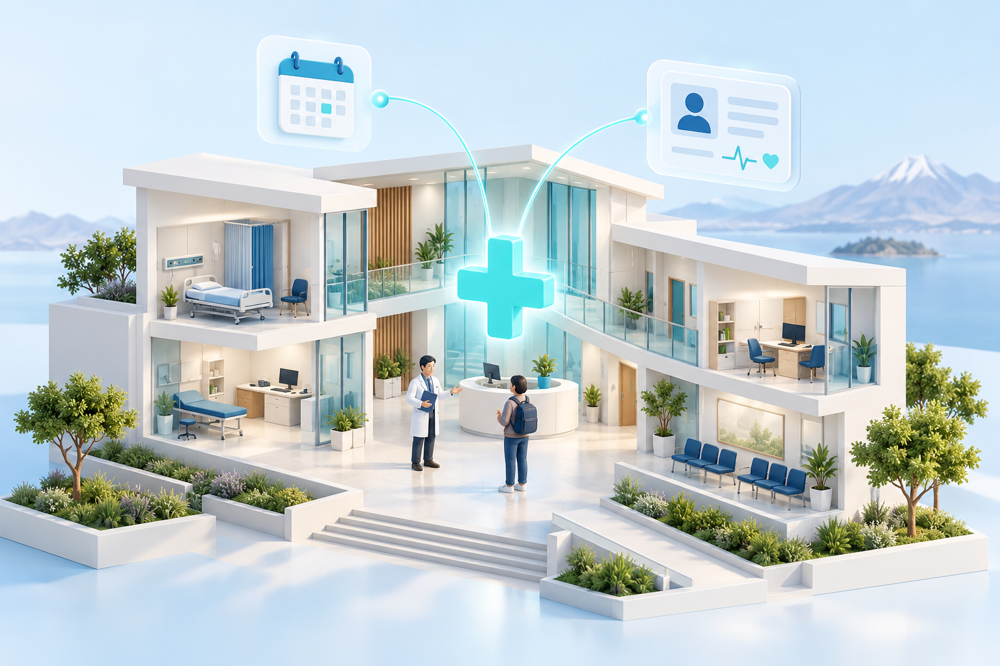

Proyecto académico · Etapa 1
Una atención
mejor conectada.
La idea de un sistema hospitalario para la comunidad universitaria, explicada desde el problema hasta el diseño.
Hospital Universitario de la UNA Puno como referencia. Salud, organización e inteligencia artificial con un alcance definido.

Una propuesta para pregrado, Posgrado, docentes y administrativos.
Atención gratuitaDatos ficticiosValidación institucional pendienteDe la idea al diseño
Cada paso tiene un propósito.
Elige un paso para entender qué aporta y consultar sus entregables.
“Documentado” significa que hay entregables para revisión académica. No significa que el hospital los haya validado ni que el software esté construido.
Consulta a tu ritmo
Encuentra lo que necesitas.
Documentos completos, diagramas y requisitos en un solo lugar.
El papel de la inteligencia artificial
Orientar con claridad.
Cuidar los límites.
El asistente propuesto ayuda a conocer los servicios, consultar disponibilidad autorizada y llegar al formulario de citas.
- La persona confirma su reserva en el flujo convencional.
- El asistente no accede a historias clínicas ni emite diagnósticos.
- El contenido sanitario y el proveedor externo requieren decisiones y revisión previas.
Lo que sigue
Decidir antes de construir.
El siguiente paso es la arquitectura. Quedan también la interfaz, el modelo de datos y el cierre del diseño.
Equipo del proyecto
Dos personas.
Una propuesta compartida.
Ingeniería de Software I
Universidad Nacional del Altiplano · Puno
Apaza Quispe, Antonio VicenteIntegrante del proyecto
Escobedo Arapa, Kenyi BlancaIntegrante del proyecto